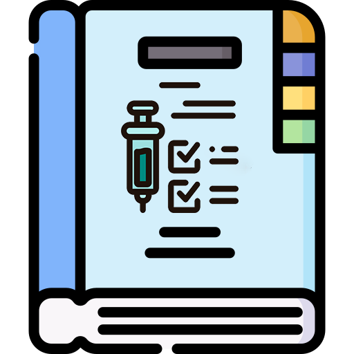

Bienvenidos
Este sitio web está diseñado para proporcionar recursos y guías sobre vacunación para estudiantes de enfermería. Aquí encontrarás documentos, cuestionarios, infografías interactivas y un espacio para resolver tus dudas.
Secciones Destacadas

Guía de Bolsillo PVU
Revisa las recomendaciones prácticas para la aplicación de vacunas.
Abrir PDFNoticias Recientes
- Nuevas recomendaciones de la OMS: Actualización en los esquemas de vacunación para 2024.
- Taller de capacitación: Próximo taller sobre manejo de la red de frío.